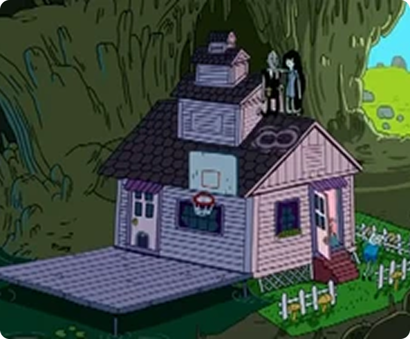

Дом Марселин


Проект был разработан на основе концепта из мультсериала Время приключений. В качестве основного объекта был выбран дом персонажа Марселин, который послужил основой для всей работы.

В процессе создания особое внимание уделялось передаче стилистики оригинала, его узнаваемых форм и атмосферы. Были проработаны архитектурные элементы, цветовая палитра и детали окружения, чтобы максимально точно воссоздать визуальный дух мультсериала. В результате получилась модель, отражающая характер и настроение оригинального концепта.
Программы: